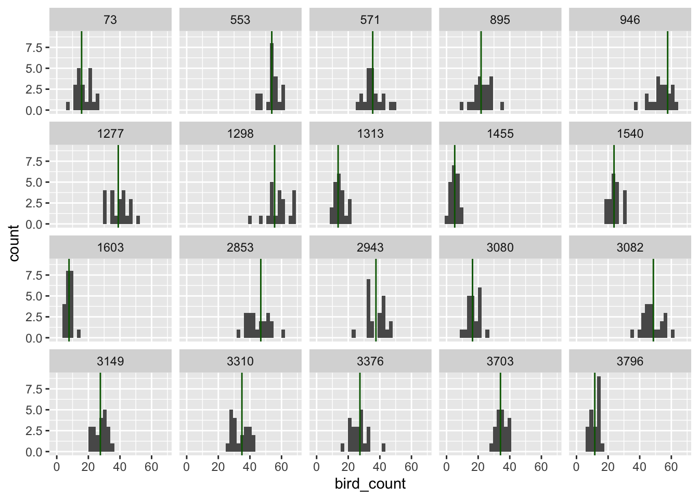

library(tidyverse)
library(cmdstanr)Data simulation
Expressing yourself through made-up numbers.
Before starting work on real data, we are going to begin by learning how to make up some of our own. There are at least three reasons why this is a good idea:
- Understand your priors.. For most interesting models in ecology, you will not be able to pick good numbers for your prior parameters just by thinking hard. Should the prior on annual tree growth be \(\text{Normal}(2, 1)\) ? or should the standard deviation be bigger? smaller? As we’ll see, simulation will demystify the process.
- Validate your model. Bayesian models are great because they can create datasets by simulation. This suggests a very minimum requirement we might have for a statistical model: use known parameters and a model to generate data, then fit that same model to the very data it generated, and see if we get back something close to those known parameter values.
- Test your understanding. Perhaps most importantly, simulation helps you to test your own intuition. If you can simulate data from your model, then you really understand it! If you can’t, then you don’t know quite how it works yet. It’s rare1 that a biologist will fail to learn something by simulating a dataset.
Simple exercise in simulation
Let’s imagine we are taking a walk as a group today at the beautiful SBL. What is the number of birds each of us is going to see on our hike?
Some questions to ask about simulated data
- What kind of observations are you going to make? Do they have a minimum or maximum value? Are they integers, or are they decimal numbers, or something else?
- Where do the numbers come from? This could be anything, from simple linear approximations (ie the models we’re looking at in this course) to ODEs, mathematical models, GAMs, etc.
- How many observations will we be making?
The process
let’s try to answer these questions for the bird walk we are about to take.
- We’re going to count birds, so we’ll have count data: a number that is either 0 or some positive, round number
- We’ll make a simplifying assumption: everybody has the same chance of seeing a bird (i.e. no differences in skill or equipment), and everyone in the class is an independent observer (i.e. nobody is working in pairs, etc)
- Everyone in the class makes only one count, so we have 23 (?) numbers.
We’re bayesians, so we need to write a probability distribution for all the possible values
\[ \begin{align} \text{Number of Birds}_{\text{seen by person i}} &\sim \text{Poisson}(\lambda) \\ \lambda &\sim \text{Uniform}(0, 60) \end{align} \]
A quick note about notation for models like these:
- We use a subscript \(i\) to indicate the “label” for each observation in our dataset. You can think of this as the row number of the data spreadsheet, and imagine sliding your finger down the column of measurements, modelling each value in turn.
- Usually we’ll use more general language, such as \(y_i\). But for this simple example I wanted to make things as explicit as possible.
- Notice the symbol \(\sim\). This is read as “distributed as”, and indicates the probability distribution from which the values might come. When the values we’re talking about are data that we can observe (in this case, counts of birds), we call the distribution the likelihood. When the value is something we can’t observe (in this case, the average count \(\lambda\)) we call the distribution the prior.
Warning
We’ll be talking about better ways to model count data in a later exercise! For now, I’m using the Uniform distribution for simplicity. It’s not usually a very good choice!
Simulation in R
One of the most useful traits of bayesian models is that they are generative: they can be used to make a simulated dataset. We’ll do that now for our bird example.
let’s simulate from a poisson distribution:
set.seed(525600)
n_people <- 21
avg_birds_per_person <- runif(1, min = 0, max = 30)
bird_count <- rpois(n_people, lambda = avg_birds_per_person)Some things to note in the code above:
Every statistical distribution that is in R (which is a lot! almost all! ) has four different functions. If the distribution is called dist, then they are:
rdist= the distribution functionsqdist= the quantile functionspdist= the probability density functionddistthe density function
The other thing to note is that there are TWO simulation steps here: first, simulating a value of the average (\(\lambda\)) and second, simulating observations. In our model, the Uniform distribution was referred to as the prior, and the Poisson distribution was referred to as a likelihood, but here you can see that they are very nearly the same thing: just statements about what distribution of values might be most consistent with the data.
Plotting the result
Let’s take a look at our simulated values:
hist(bird_count, col = "lightblue", xlim = c(0, 50))
This is pretty great, and represents one possible realization of sampling. However, one sample isn’t enough to tell us about what our \(\text{Uniform}(0, 60)\) prior really means. Let’s do a few different simulations:
library(tidyverse)
set.seed(525600)
simulate_some_birds <- function() {
lambda <- runif(1, min = 0, max = 60)
data.frame(obs = rpois(23, lambda = lambda))
}
purrr::rerun(.n = 12, simulate_some_birds()) |>
dplyr::bind_rows(.id = "sample") |>
ggplot(aes(x = obs)) +
geom_histogram() +
facet_wrap(~sample) +
theme_bw() +
labs(x = "Number of birds observed per person")`stat_bin()` using `bins = 30`. Pick better value with `binwidth`.
This figure shows different simulations of what, according to our prior, might be reasonable datasets for us to study. Do any of them seem implausible to you? If so, try changing the prior. The goal is to make fake datasets that seem plausible, but which still include the possibility of some surprising observations.
When you have a prior that generates observations that cover a range of scientifically reasonable values, then you are ready to move on to fitting real data.
However before we actually do that, let’s do the whole thing again: this time in Stan.
Simulating data in Stan
Let’s look back at the equation:
\[ \begin{align} \text{Number of Birds}_{\text{seen by person i}} &\sim \text{Poisson}(\lambda) \\ \lambda &\sim \text{Uniform}(0, 60) \end{align} \]
And then translate it into Stan:
poisson_simulation <- cmdstan_model(
stan_file = "topics/01_simulation/poisson_simulation.stan")
poisson_simulationdata {
int<lower=0> n_people;
}
generated quantities {
real<lower=0> avg_birds_per_person;
// an array -- like a list in R
array[n_people] int<lower=0> bird_count;
// simulate averages
avg_birds_per_person = uniform_rng(0, 60);
// simulate observations with that average
for (i in 1:n_people){
bird_count[i] = poisson_rng(avg_birds_per_person);
}
}What you see just above is not R, but is the first Stan program we will see in this course. Stan code is written in a text file, which you then bring into R with the function cmdstan_model as shown above. This does more than read the program, it compiles the code into a computer program. When you sample the model, as we’ll do later, Stan samples the posterior distribution using Hamiltonian Monte Carlo.
This Stan program has two parts. Each part is separated with curly braces {}. The are they data block and the generated quantities block:
data {
int<lower=0> n_people;
}And the generated quantites block.
generated quantities {
real<lower=0> avg_observed;
// an array -- like a list in R
array[n_people] int<lower=0> bird_count;
// simulate averages
avg_birds_per_person = uniform_rng(0, 60);
// simulate observations with that average
for (i in 1:n_people){
bird_count[i] = poisson_rng(avg_birds_per_person);
}
}
Let's look at similarities and differences to the procedure in R:
similarities:
* We have a random number generating function for each of our distributions.
In R, these were called `runif` and `rpois`, here they are `uniform_rng` and `poisson_rng`.
* Once again, the only thing we need to provide is `n_people`, the number of observers we have
differences:
* every line ends with a semicolon `;`
* in Stan, the name of a variable is on the RIGHT of a line, while in R it's on the left.
* we need to use a for-loop to generate random variables.
* note the syntax for creating an `array` of integers. Arrays in Stan are a little like lists in R: they can hold any other kind of object, and are of a certain length.
::: {.cell}
```{.r .cell-code}
poisson_sim_stan <- poisson_simulation$sample(data = list(n_people = 21),
# usually not necessary -- this model has no parameters
fixed_param = TRUE
)Running MCMC with 4 sequential chains...
Chain 1 Iteration: 1 / 1000 [ 0%] (Sampling)
Chain 1 Iteration: 100 / 1000 [ 10%] (Sampling)
Chain 1 Iteration: 200 / 1000 [ 20%] (Sampling)
Chain 1 Iteration: 300 / 1000 [ 30%] (Sampling)
Chain 1 Iteration: 400 / 1000 [ 40%] (Sampling)
Chain 1 Iteration: 500 / 1000 [ 50%] (Sampling)
Chain 1 Iteration: 600 / 1000 [ 60%] (Sampling)
Chain 1 Iteration: 700 / 1000 [ 70%] (Sampling)
Chain 1 Iteration: 800 / 1000 [ 80%] (Sampling)
Chain 1 Iteration: 900 / 1000 [ 90%] (Sampling)
Chain 1 Iteration: 1000 / 1000 [100%] (Sampling)
Chain 1 finished in 0.0 seconds.
Chain 2 Iteration: 1 / 1000 [ 0%] (Sampling)
Chain 2 Iteration: 100 / 1000 [ 10%] (Sampling)
Chain 2 Iteration: 200 / 1000 [ 20%] (Sampling)
Chain 2 Iteration: 300 / 1000 [ 30%] (Sampling)
Chain 2 Iteration: 400 / 1000 [ 40%] (Sampling)
Chain 2 Iteration: 500 / 1000 [ 50%] (Sampling)
Chain 2 Iteration: 600 / 1000 [ 60%] (Sampling)
Chain 2 Iteration: 700 / 1000 [ 70%] (Sampling)
Chain 2 Iteration: 800 / 1000 [ 80%] (Sampling)
Chain 2 Iteration: 900 / 1000 [ 90%] (Sampling)
Chain 2 Iteration: 1000 / 1000 [100%] (Sampling)
Chain 2 finished in 0.0 seconds.
Chain 3 Iteration: 1 / 1000 [ 0%] (Sampling)
Chain 3 Iteration: 100 / 1000 [ 10%] (Sampling)
Chain 3 Iteration: 200 / 1000 [ 20%] (Sampling)
Chain 3 Iteration: 300 / 1000 [ 30%] (Sampling)
Chain 3 Iteration: 400 / 1000 [ 40%] (Sampling)
Chain 3 Iteration: 500 / 1000 [ 50%] (Sampling)
Chain 3 Iteration: 600 / 1000 [ 60%] (Sampling)
Chain 3 Iteration: 700 / 1000 [ 70%] (Sampling)
Chain 3 Iteration: 800 / 1000 [ 80%] (Sampling)
Chain 3 Iteration: 900 / 1000 [ 90%] (Sampling)
Chain 3 Iteration: 1000 / 1000 [100%] (Sampling)
Chain 3 finished in 0.0 seconds.
Chain 4 Iteration: 1 / 1000 [ 0%] (Sampling)
Chain 4 Iteration: 100 / 1000 [ 10%] (Sampling)
Chain 4 Iteration: 200 / 1000 [ 20%] (Sampling)
Chain 4 Iteration: 300 / 1000 [ 30%] (Sampling)
Chain 4 Iteration: 400 / 1000 [ 40%] (Sampling)
Chain 4 Iteration: 500 / 1000 [ 50%] (Sampling)
Chain 4 Iteration: 600 / 1000 [ 60%] (Sampling)
Chain 4 Iteration: 700 / 1000 [ 70%] (Sampling)
Chain 4 Iteration: 800 / 1000 [ 80%] (Sampling)
Chain 4 Iteration: 900 / 1000 [ 90%] (Sampling)
Chain 4 Iteration: 1000 / 1000 [100%] (Sampling)
Chain 4 finished in 0.0 seconds.
All 4 chains finished successfully.
Mean chain execution time: 0.0 seconds.
Total execution time: 0.7 seconds.:::
This generates a large number of simulated datasets – the default is 4000 datasets! Each time the model samples, it draws a new value for the unobserved average (avg_birds_per_person) and for the number of birds seen by each person.
Let’s pull out just a few of these datasets and visualize them.
We’ll use a wonderful package called tidybayes to easily extract posterior draws from cmdstan objects.
library(tidybayes)
pois_sim <- tidybayes::spread_draws(poisson_sim_stan,
avg_birds_per_person,
bird_count[],
ndraws = 20,
seed = 525600)
pois_sim |>
ggplot(aes(x = bird_count)) +
geom_histogram() +
geom_vline(aes(xintercept = avg_birds_per_person), col = "darkgreen") +
facet_wrap(~.draw)`stat_bin()` using `bins = 30`. Pick better value with `binwidth`.
Parameter recovery
Let’s go back and look at the fake datasets we created in R
avg_birds_per_person[1] 17.12789bird_count [1] 23 10 19 27 20 15 16 18 18 22 14 14 14 18 17 13 26 19 16 13 10and let’s see if we can recapture these parameters.
We’ll do it first in R, using the function fitdistr from the MASS package:
MASS::fitdistr(bird_count, dpois, start = list(lambda=10))Warning in stats::optim(x = c(23L, 10L, 19L, 27L, 20L, 15L, 16L, 18L, 18L, : one-dimensional optimization by Nelder-Mead is unreliable:
use "Brent" or optimize() directly lambda
17.2382812
( 0.9060239)This could also be done with glm
bird_glm <- glm(bird_count ~ 1, family = "poisson")
exp(coef(bird_glm))(Intercept)
17.2381 You can see that in all cases we are getting close to the value of avg_birds_per_person, which in these simulations is the true value.
Sampling the posterior distribution in Stan
We will be doing a lot of Stan models this week, and we will begin by replicating the above GLM in Stan.
poisson_model <- cmdstan_model(
stan_file = "topics/01_simulation/poisson_model.stan")
poisson_modeldata {
int<lower=0> n_people;
array[n_people] int<lower=0> bird_count_observed;
}
parameters {
real avg_birds_per_person;
}
model {
bird_count_observed ~ poisson(avg_birds_per_person);
avg_birds_per_person ~ normal(1, 1);
}
generated quantities {
// an array -- like a list in R
array[n_people] int<lower=0> bird_count;
// simulate observations with that average
for (i in 1:n_people){
bird_count[i] = poisson_rng(avg_birds_per_person);
}
}This model has all the same code as the previous one, but has two additional parts. Let’s compare them
poisson_simulationdata {
int<lower=0> n_people;
}
generated quantities {
real<lower=0> avg_birds_per_person;
// an array -- like a list in R
array[n_people] int<lower=0> bird_count;
// simulate averages
avg_birds_per_person = uniform_rng(0, 60);
// simulate observations with that average
for (i in 1:n_people){
bird_count[i] = poisson_rng(avg_birds_per_person);
}
}poisson_modeldata {
int<lower=0> n_people;
array[n_people] int<lower=0> bird_count_observed;
}
parameters {
real avg_birds_per_person;
}
model {
bird_count_observed ~ poisson(avg_birds_per_person);
avg_birds_per_person ~ normal(1, 1);
}
generated quantities {
// an array -- like a list in R
array[n_people] int<lower=0> bird_count;
// simulate observations with that average
for (i in 1:n_people){
bird_count[i] = poisson_rng(avg_birds_per_person);
}
}What’s different in this second Stan program
- parameters block
- model block
- the average is now moved to the model, no longer in the generated quantities
Prior vs Posterior predictive checks
Parameter recovery
Then we look to see if we have recovered our parameter.
Bonus material: conjugacy
You would never actually do the analysis on this page. In reality, for simple distributions such as the Poisson, we would
Exercises
Footnotes
in Andrew’s experience anyway↩︎